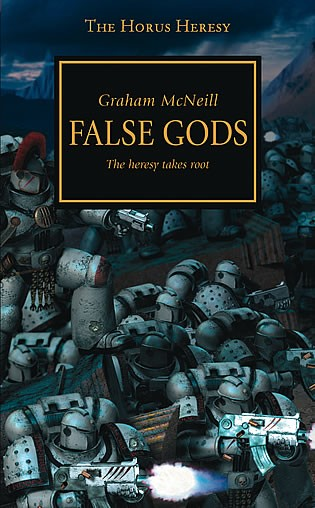

FALSE GODS

Author: Graham McNeill
Format: Novel
The Great Crusade continues under Horus, but mistrust and resentment trouble the Imperium’s armies. After the Warmaster is wounded on Davin, those closest to him face a choice that could change the course of the war.
Introduction reviewed against Black Library’s description on 2026-09-27. The publisher page may contain spoilers.
Publication facts: publisher source, checked 2026-09-26.
Open this work in the interactive Archive to track reading progress and explore related works.